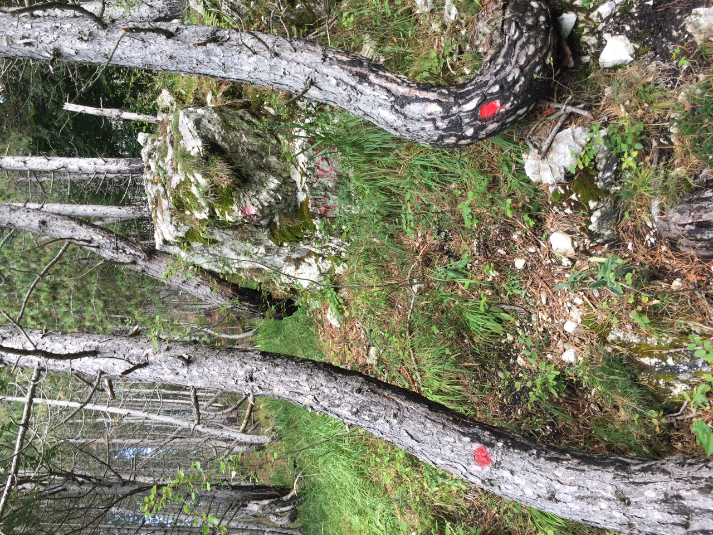
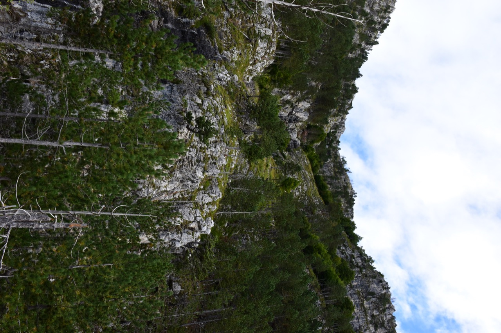
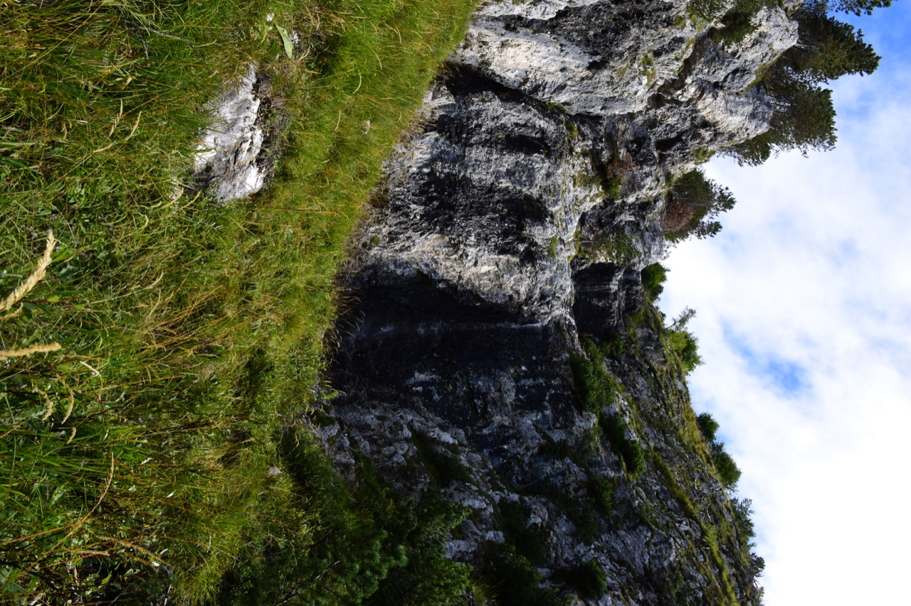
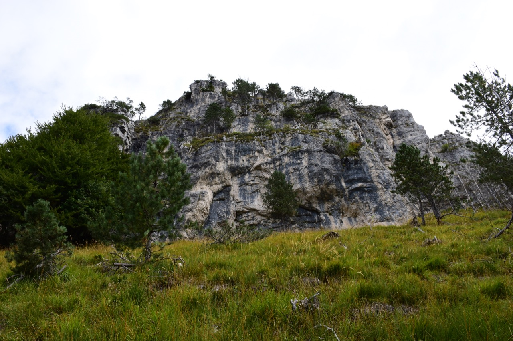
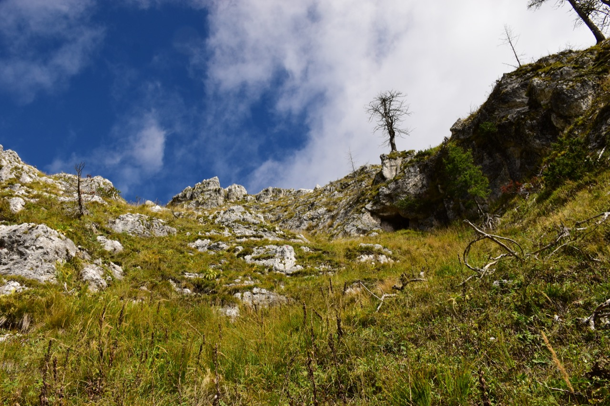
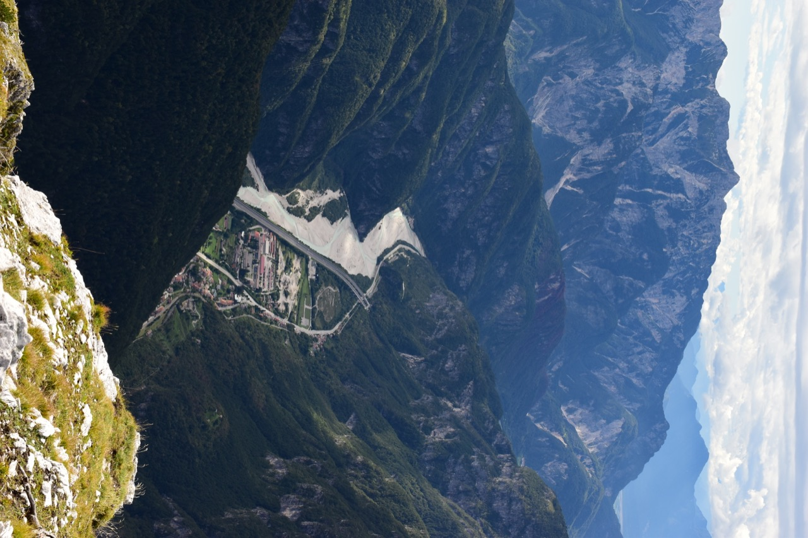
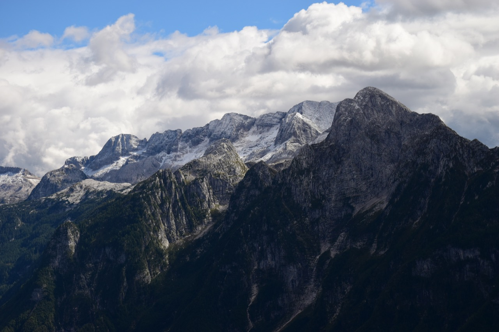
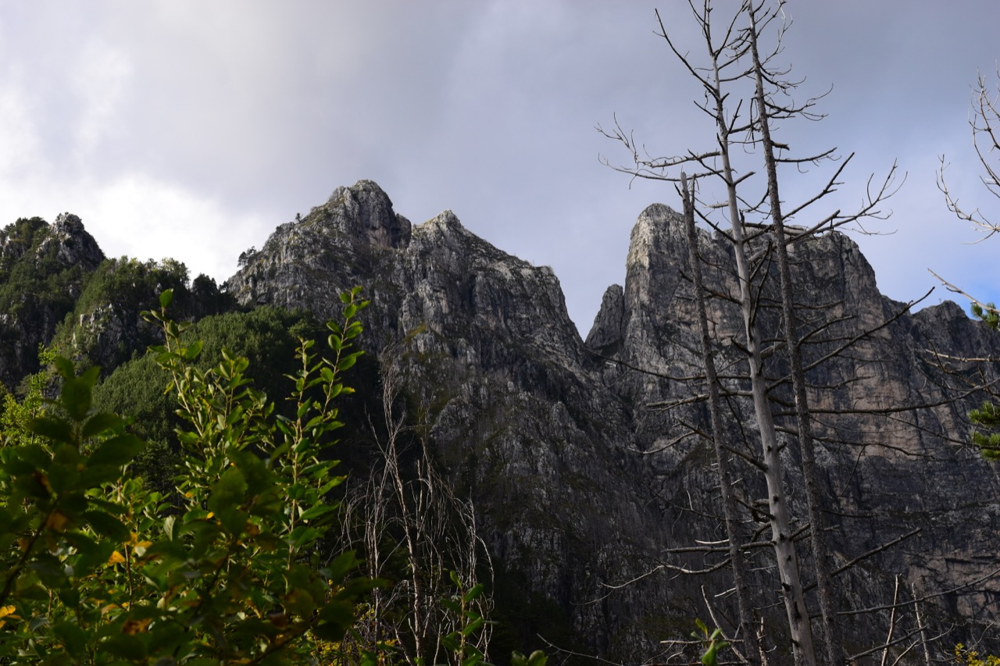

Il monte Jovet, sovrastante il paese di Patoc in val Raccolana, è un ottimo balcone sul selvaggio e dimenticato sottogruppo del Cimone: è d'obbligo citare l'alpinista triestino Vladimiro Dougan (vedi anche il film), che negli anni '30 ne esplorò ogni angolo, salvando dall'oblio antichi percorsi.
{kind=link}
Partiamo da Patoc seguendo il troi da li caladis (segnato in nero sulla Tabacco); la prima parte è quella meno evidente (presenti bollini rossi che portano da qualche altra parte), ma poi è facile da seguire.
Il troi è davvero bello e panoramico.
Il bivio per la salita al Jovet è segnalato in modo anche eccessivo.
Dal bivio si sale (traccia saltuaria) sulla dx orografica di un rio, poi lo si attraversa, si sale e lo si attraversa di nuovo più in alto; segue una ripidissima ma breve salita che porta su un vertiginoso quanto minuscolo forcellino. Siamo saliti sul cocuzzolo sopra il forcellino (quota 1355.2 CTR) per avere uno sguardo d'insieme sul percorso da fare. Il alto a destra il cret neri, in primo piano la parete di I° o poco più da salire (guardando bene si nota una corda fissa arancione).
Subito dopo il tratto attrezzato abbiamo fatto una breve deviazione per visitare una bellissima cascatella.
Ed eccoci in breve sotto al cret neri.
Finalmente appare la cima, che è quella più a sinistra.
Il panorama verso il Canin, con una leggera spruzzata di neve settembrina, è davvero magnifico.

Arriviamo al valloncello che scende dalla cima; a destra si nota una cavernetta con all'interno un reperto di guerra.
I padroni di casa ci osservano dalla quota 1713.9 CTR.
Tecnicamente facile ma spettacolare per il continuo panorama sul canal del Ferro. L'arrivo in cresta è davvero emozionante.

La leggendaria Forca de la Puartate.
In primo piano l'arcigno Tiscjelat, arso dalle fiamme, così vicino eppure irraggiungibile; dietro di esso, il triangolare Plan de la Cjavile e la forca della Puartate. A destra della forca, la cima da lis Miris e il Ciuc di Vallisetta, sovrapposti all'imponente mole del Cimone. A sinistra della forca, l'ampio crestone sommitale dello Jovet Blanc (o Jovet dai Blancs?), sotto cui passa il troi da le Male Làvare, itinerario di collegamento con la testata del rio Livinâl.
Uno sguardo verso il Cuel da la Bareta.
Dietro si vede l'interessantissimo versante Sud dello Jôf di Dogna.
L'ometto di vetta del Jovet.
Chiusaforte nel basso canal del Ferro; sullo sfondo il gruppo del Plauris.
Chiout Cali e Saletto in val Raccolana.
Non c'è bisogno di descrizioni!
Siamo poi scesi per la stessa via e per l'ex CAI 620 a Patoc. In foto il selvaggio costone del Rop, via d'accesso alla Puartate.
Jovet e Tiscjelat. Mi colpisce il contrasto fra la vetetazione.
